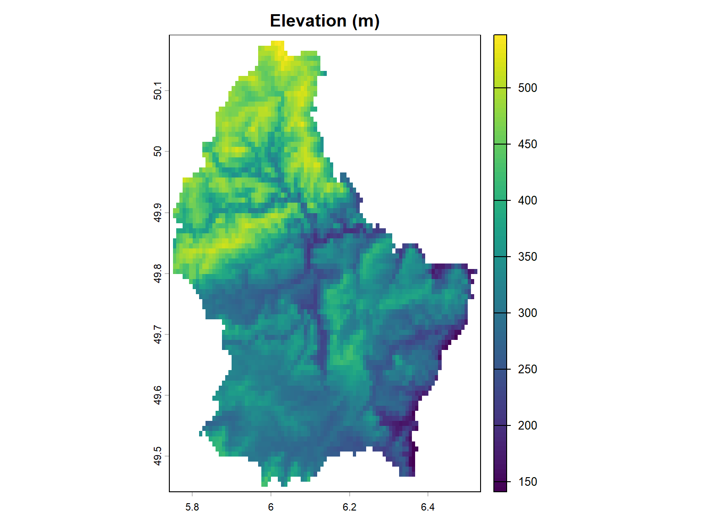
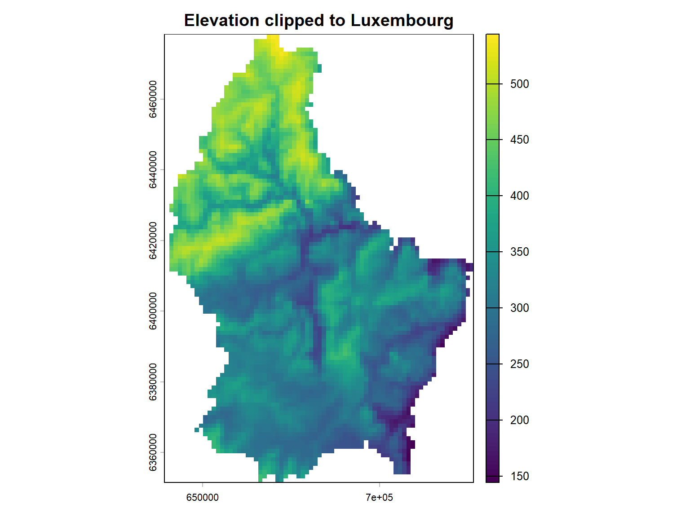

# Install any missing packages
pkgs <- c("sf", "terra", "tmap", "ggplot2", "dplyr", "tidyr", "readr",
"spdep", "GWmodel", "mlspatial", "randomForest", "xgboost",
"e1071", "caret", "knitr", "rmarkdown")
install_if_missing <- function(p) {
if (!require(p, character.only = TRUE, quietly = TRUE)) {
install.packages(p, repos = "https://cloud.r-project.org/")
library(p, character.only = TRUE)
}
}
invisible(sapply(pkgs, install_if_missing))1 Module 1: R Environment Setup and Spatial Data Import
This module establishes your R spatial epidemiology toolkit and teaches you how to import, join, and inspect spatial and health data. By the end of this module, you will have a clean sf object ready for mapping and analysis.
What you will learn
- How to install and load the packages this tutorial relies on.
- What a shapefile, a GeoPackage, and a raster are, and how to import all three into R using
sfandterra. - Why the GeoPackage (
.gpkg) format has largely replaced the legacy shapefile (.shp). - How to preprocess (tidy) spatial data before analysis.
- How to join a table of health outcomes to spatial boundaries.
- How to inspect and manage the coordinate reference system (CRS).
A short note on why setup matters: most frustrating spatial errors — maps that look blank, points plotted in the wrong ocean, joins that silently drop countries — happen before any modelling. This module builds good habits that will save you hours later.
1.1 Install and Load R Packages
Purpose: Install and attach the core spatial epidemiology toolkit.
A package is a collection of R functions and data bundled together. Two steps are always involved:
- Install (once per machine):
install.packages()downloads the package from a repository (CRAN by default) and stores it on your computer. - Load (every session):
library()attaches the package so its functions are available. You must re-load packages each time you start a new R session.
The table below shows the packages we will use throughout this tutorial and their roles:
| Task | Package | Role |
|---|---|---|
| Vector spatial data | sf |
Simple features standard for polygons, points, lines |
| Raster spatial data | terra |
Fast raster extraction and processing |
| Thematic mapping | tmap, ggplot2 |
Static and interactive maps |
| Data manipulation | dplyr, tidyr, readr |
Tidy data wrangling |
| Spatial statistics | spdep |
Neighbours, Moran’s I, Getis-Ord Gi* |
| Geographically weighted regression | GWmodel |
Local regression modelling |
| Integrated ML + mapping | mlspatial |
Import, map, model, evaluate |
| Machine learning engines | randomForest, xgboost, e1071, caret |
RF, XGB, SVR algorithms |
NoteHow this code works
The helper function avoids re-installing packages you already have:
pkgs <- c(...)creates a character vector of package names.install_if_missing <- function(p)defines a function taking one package namep.require(p, character.only = TRUE, quietly = TRUE)tries to load the package. It returnsTRUEif the package is available andFALSEif not — importantly, it does not stop with an error likelibrary()would.!require(...)therefore means “the package is not available”. When that is true, we install it and then load it.character.only = TRUEtellsrequire()/library()to treatpas a value (a string like"sf") rather than as a literal name. Without it, R would look for a package literally calledp.sapply(pkgs, install_if_missing)applies the function to every element ofpkgsin turn (a one-line loop).invisible()hides the output ofsapply(), keeping the console tidy.
You can run the same logic more manually for a single package:
install.packages("sf")
library(sf)
TipSpeed Tip
If you are on a slow internet connection, install packages one at a time and restart RStudio after each batch of 3–4 packages.
Expected output: All packages load without error. mlspatial should be version ≥ 0.1.0.
1.2 Load Administrative Boundary Data
Purpose: Import polygon shapefiles representing administrative regions.
We demonstrate two approaches: (a) built-in data from mlspatial (fastest for learning), and (b) sf::st_read() for your own shapefiles. The second approach is expanded in the next section.
# Approach A: Built-in Africa shapefile from mlspatial
data(africa_shp, package = "mlspatial")
# Inspect the object
class(africa_shp)[1] "sf" "data.frame"dim(africa_shp)[1] 54 9# Approach B: Import your own shapefile (commented out)
# ghana_regions <- sf::st_read("path/to/ghana_regions.shp")
NoteUnderstanding the
sf object
africa_shp is an sf (simple features) object. It is essentially a normal data frame with one special extra column, geometry, that stores the spatial coordinates of each feature. This is why class() prints both "sf" and "data.frame": you get all the familiar data-frame tools (filtering, summarising, joining) plus spatial tools.
- Each row is one feature (here, one country).
- Each column other than
geometryis an attribute (e.g. country name, population). dim()returns 54 rows (54 African countries) and 9 columns, one of which isgeometry.
Key parameters of st_read(): - dsn (data source name): the path to the file or folder containing the data — a local file, a directory, a zipped shapefile, or a URL. - layer: the layer name; needed whenever the source holds more than one layer (a GeoPackage, a File Geodatabase, or a folder of shapefiles). Supply it explicitly for .gpkg files. - quiet = TRUE suppresses progress messages.
Expected output: africa_shp is an sf data frame with a geometry column and attribute columns (including NAME).
1.3 Importing Your Own Spatial Data
Purpose: Read an external shapefile, GeoPackage, or raster into R and prepare (tidy) them for analysis. This is the skill you need once you move from the bundled example data to your own project.
Two fundamental data models
Spatial data comes in two flavours, and R uses a different package for each:
| Model | What it stores | Package | Example |
|---|---|---|---|
| Vector | Discrete features as points, lines, or polygons (with attribute tables) | sf |
Admin boundaries, health facilities, roads |
| Raster | A continuous grid of cells (pixels), each holding a value | terra |
Elevation, temperature, land cover, rainfall |
A shapefile is a vector format. Despite the .shp extension, it is actually several files that must travel together — .shp (geometry), .dbf (attribute table), .shx (spatial index), and .prj (the CRS definition). If you move only the .shp file, the data will not open.
A GeoPackage (.gpkg) is the modern container for the same kind of vector data: a single file, built on SQLite, that can hold several layers at once. It is covered in Import a GeoPackage with sf below.
A raster file (commonly .tif/.tiff, from “GeoTIFF”) is a grid of cells. Each cell covers a fixed area and holds a single value, which is why rasters are ideal for continuous surfaces such as elevation or climate.
1.3.1 Import a shapefile with sf
We use a small shapefile that ships with the terra package (the 12 cantons of Luxembourg). Replace the path with your own .shp file if you want to import your own data.
# Get the path to a built-in example shapefile
shp_path <- system.file("ex/lux.shp", package = "terra")
shp_path[1] "C:/Users/gkagyen/AppData/Local/R/win-library/4.5/terra/ex/lux.shp"# Read it into R as an sf object
lux <- sf::st_read(shp_path, quiet = TRUE)
# Quick look
class(lux)[1] "sf" "data.frame"nrow(lux)[1] 12
NoteHow
st_read() works
st_read() is the single most important function for vector data. Give it a file path and it returns an sf object, automatically reading the geometry, the attribute table, and the CRS from the accompanying files.
dsnis the path (here passed positionally asshp_path).quiet = TRUEsilences the layer/feature progress report.
1.3.2 Import a GeoPackage with sf
A GeoPackage (.gpkg) is an open standard (OGC) container built on SQLite. It stores one or more spatial layers in a single file, so there are no sidecar files to lose. The sf package ships real GeoPackages in its gpkg/ folder, so there is nothing to download: we use the 100 North Carolina counties in nc.gpkg. Conveniently, the identical dataset also ships as a shapefile, so we can compare the two formats on the same data.
# Path to a GeoPackage that ships with sf (100 North Carolina counties)
gpkg_path <- system.file("gpkg/nc.gpkg", package = "sf")
basename(gpkg_path)[1] "nc.gpkg"# Inspect the container before reading: layers, geometry, features, CRS
sf::st_layers(gpkg_path)Driver: GPKG
Available layers:
layer_name geometry_type features fields crs_name
1 nc.gpkg Multi Polygon 100 14 NAD27# Read the layer into R as an sf object
nc_gpkg <- sf::st_read(gpkg_path, quiet = TRUE)
# The same dataset also ships as a shapefile...
nc_shp <- sf::st_read(system.file("shape/nc.shp", package = "sf"), quiet = TRUE)
# ...so the two formats can be compared directly
class(nc_gpkg)[1] "sf" "data.frame"dim(nc_gpkg)[1] 100 15sf::st_crs(nc_gpkg)$epsg[1] 4267# The geometry column keeps whatever name the file itself declares
names(nc_gpkg)[ncol(nc_gpkg)] # "geom"[1] "geom"names(nc_shp)[ncol(nc_shp)] # "geometry"[1] "geometry"# The attribute tables are identical
identical(
sf::st_drop_geometry(nc_gpkg)[order(nc_gpkg$FIPS), ],
sf::st_drop_geometry(nc_shp)[order(nc_shp$FIPS), ]
)[1] TRUEEither way st_read() returns an sf object, so the choice of format changes how the data is stored, not how you analyse it.
A GeoPackage can also hold layers with no geometry at all — it is a SQLite database first and a spatial format second.
# A geometry-free layer comes back as a plain data frame
nosp <- sf::st_read(system.file("gpkg/nospatial.gpkg", package = "sf"), quiet = TRUE)
class(nosp)[1] "data.frame"
NoteHow
st_layers() and st_read() work with a GeoPackage
system.file("gpkg/nc.gpkg", package = "sf")builds the path to a file inside the installedsfpackage. These examples live ingpkg/, not the more usualextdata/, so the subfolder must be named explicitly.st_layers()queries the container and reports every layer with its geometry type, feature count, field count, and CRS. Run it whenever you receive an unfamiliar.gpkg— the file name tells you nothing about how many layers are inside.st_read(gpkg_path)returns ansfobject. When a GeoPackage holds more than one layer you must name the one you want withlayer = "..."; otherwisest_read()silently returns the first layer, which may not be the one you intended.st_drop_geometry()strips the geometry and returns a plain data frame, which is whyidentical()can compare the two attribute tables directly. Theorder()calls align the rows byFIPSfirst, because the two files store them in a different order.- The geometry column is named by the file rather than hard-coded: this GeoPackage layer calls it
geom, whereasst_read()always names a shapefile’s geometry columngeometry. Both are ordinarysfobjects. - Nothing here is GeoPackage-specific:
st_read()delegates to GDAL, so the same call reads.gpkg,.shp,.geojson,.gdb, and dozens of other formats. Onlydsnchanges.
NoteWhy
.gpkg is more modern than .shp
The ESRI Shapefile dates from the early 1990s and carries known design limitations. A GeoPackage is a single, open, relational container that avoids most of them:
| Feature | .shp (shapefile) |
.gpkg (GeoPackage) |
|---|---|---|
| Files on disk | A mandatory trio (.shp, .shx, .dbf) plus sidecars (.prj, .cpg, …) |
One file |
| Layers per file | One | Many |
| Field name length | Truncated to 10 characters | Up to 255 characters |
| Field types | Limited; no true dates, no 64-bit integers | Full SQLite type system |
| Geometry types | One type per file | Mixable, multiple geometry columns |
| Missing values | No true NULL; blank numerics often arrive as 0 |
NULL distinct from 0 |
| File size | 2 GB per component | No comparable practical ceiling |
| Text encoding | Ambiguous, needs a .cpg file |
UTF-8 by definition |
| Keys and indexes | None | Primary keys, constraints, spatial indexes |
| Standard | De facto (ESRI) | Open (OGC / SQLite) |
Two of these bite spatial epidemiology directly. The 10-character field name limit silently truncates columns: none of the nc fields are long enough to lose characters, but join keys and outcome names in your own data may be, and a truncated key drops records without warning. And with no true NULL, a genuinely missing incidence rate may be stored and read back as 0, deflating rates and pulling maps toward zero. GeoPackage also keeps the CRS inside the file, so a stray .prj cannot be lost in transit, and one file is far easier to version, checksum, and share than five.
In practice: use .gpkg for anything you control, but expect to meet .shp constantly in legacy data and in exports from older GIS software. st_read() handles both, so the mental cost of switching is one file path.
TipWhere to find more GeoPackage examples
sf ships five more GeoPackages alongside nc.gpkg:
list.files(system.file("gpkg", package = "sf"))They are handy for practice, and b_pump.gpkg is a small piece of history — a single point in Soho, London (longitude -0.1367, latitude 51.5133) marking the Broad Street water pump whose removal ended John Snow’s 1854 cholera outbreak and helped establish epidemiology as a discipline.
When a data portal offers a choice, prefer .gpkg, then .geojson, then a zipped .shp. GeoJSON is also a single file and universally supported, but it is plain text, so it is much larger and slower than .gpkg for polygon layers. To convert a shapefile you already have, sf::st_write(myshape, "out.gpkg") is all it takes — no external GIS software required.
1.3.3 Inspect and tidy the vector data
Before analysis, check the object’s geometry type, CRS, and validity, and tidy up anything that will cause trouble later.
# Geometry type and number of features
sf::st_geometry_type(lux, by_geometry = FALSE)[1] POLYGON
18 Levels: GEOMETRY POINT LINESTRING POLYGON MULTIPOINT ... TRIANGLE# Coordinate reference system (EPSG code)
sf::st_crs(lux)Coordinate Reference System:
User input: WGS 84
wkt:
GEOGCRS["WGS 84",
DATUM["World Geodetic System 1984",
ELLIPSOID["WGS 84",6378137,298.257223563,
LENGTHUNIT["metre",1]]],
PRIMEM["Greenwich",0,
ANGLEUNIT["degree",0.0174532925199433]],
CS[ellipsoidal,2],
AXIS["latitude",north,
ORDER[1],
ANGLEUNIT["degree",0.0174532925199433]],
AXIS["longitude",east,
ORDER[2],
ANGLEUNIT["degree",0.0174532925199433]],
ID["EPSG",4326]]# Are all geometries valid? (FALSE means some need fixing)
all(sf::st_is_valid(lux))[1] TRUE# Fix any invalid geometries
lux <- sf::st_make_valid(lux)
# Drop empty geometries (features with no coordinates)
lux <- lux[!sf::st_is_empty(lux), ]
# Tidy column names: lower-case, underscores instead of spaces
names(lux) <- gsub("[[:space:]]+", "_", tolower(names(lux)))
names(lux)[1] "id_1" "name_1" "id_2" "name_2" "area" "pop" "geometry"# Keep only the columns you need (canton name and population)
lux_sub <- lux[, c("name_2", "pop", "geometry")]
head(lux_sub)Simple feature collection with 6 features and 2 fields
Geometry type: POLYGON
Dimension: XY
Bounding box: xmin: 5.74414 ymin: 49.69933 xmax: 6.528252 ymax: 50.18162
Geodetic CRS: WGS 84
name_2 pop geometry
1 Clervaux 18081 POLYGON ((6.02493 50.18162,...
2 Diekirch 32543 POLYGON ((6.177477 49.87787...
3 Redange 18664 POLYGON ((5.880909 49.8714,...
4 Vianden 5163 POLYGON ((6.129381 49.97283...
5 Wiltz 16735 POLYGON ((5.975572 50.02795...
6 Echternach 18899 POLYGON ((6.381573 49.84235...
NoteWhat each step does
st_geometry_type(..., by_geometry = FALSE)reports the single shared geometry type (e.g.MULTIPOLYGON) rather than one per row.st_crs()shows the coordinate reference system (see the CRS section below).st_is_valid()checks each geometry for self-intersections and other defects;st_make_valid()repairs them. Invalid geometries are a common source of cryptic errors later.st_is_empty()flags features with no coordinates; we remove them.gsub("[[:space:]]+", "_", tolower(names(lux)))converts names like"NAME_2"to"name_2"and replaces spaces with underscores, so they are easier to type and safe to use in formulas.- Subsetting with
lux[, c("name_2", "pop", "geometry")]keeps only relevant columns (notegeometrystays so it remains spatial).
1.3.4 Import a raster with terra
We use a small digital elevation model (DEM) that ships with terra. Elevation is a common covariate in spatial epidemiology — for example, altitude influences temperature and the distribution of vector-borne diseases.
# Path to a built-in example raster (a DEM)
r_path <- system.file("ex/elev.tif", package = "terra")
r_path[1] "C:/Users/gkagyen/AppData/Local/R/win-library/4.5/terra/ex/elev.tif"# Read it into R as a SpatRaster
elev <- terra::rast(r_path)
# Inspect it
elevclass : SpatRaster
size : 90, 95, 1 (nrow, ncol, nlyr)
resolution : 0.008333333, 0.008333333 (x, y)
extent : 5.741667, 6.533333, 49.44167, 50.19167 (xmin, xmax, ymin, ymax)
coord. ref. : lon/lat WGS 84 (EPSG:4326)
source : elev.tif
name : elevation
min value : 141
max value : 547 terra::nlyr(elev) # number of layers (bands)[1] 1terra::res(elev) # cell size in the x and y directions[1] 0.008333333 0.008333333terra::ext(elev) # spatial extent (bounding box)SpatExtent : 5.74166666666667, 6.53333333333333, 49.4416666666667, 50.1916666666667 (xmin, xmax, ymin, ymax)terra::crs(elev, describe = TRUE)$code # EPSG code[1] "4326"# Plot it
plot(elev, main = "Elevation (m)")
NoteUnderstanding the raster print-out
terra::rast() returns a SpatRaster. When you print it, you see:
- dimensions — number of rows, columns, and layers. This example has one layer (a single-band DEM); a multispectral satellite image might have several.
- resolution — the ground size of one cell (here ≈ 0.0083 degrees).
- extent — the bounding box (xmin, xmax, ymin, ymax).
- crs — the coordinate reference system.
1.3.5 Preprocess the raster
Rasters from different sources rarely line up. The three most common preprocessing tasks are reprojecting, cropping/masking, and resampling.
# Reproject the raster and polygons to a shared projected CRS (EPSG:3857)
elev_web <- terra::project(elev, "EPSG:3857")
lux_web <- sf::st_transform(lux_sub, crs = 3857)
# Convert the sf polygons to a SpatVector so terra can use them
lux_vect <- terra::vect(lux_web)
# Crop to the extent of the polygons, then mask to their exact shape
elev_lux <- terra::crop(elev_web, lux_vect)
elev_lux <- terra::mask(elev_lux, lux_vect)
plot(elev_lux, main = "Elevation clipped to Luxembourg")
NoteWhy these three steps matter
project()changes the CRS of a raster;st_transform()does the same for vector data. Layers must share a CRS before you can overlay or stack them.crop()trims the raster to a bounding box (fast);mask()then sets cells outside the polygon toNA, giving the raster the exact shape of your study area.vect()converts ansfobject into aterra-compatibleSpatVector(andsf::st_as_sf()converts back the other way).
The terra package also provides resample() to align rasters that share a CRS but differ in resolution, which you will need when combining multiple raster layers.
TipThe
mlspatial shortcuts
mlspatial ships thin wrappers over these steps for convenience: load_shapefile("path.shp") (a wrapper around st_read()) and load_incidence_data("path.xlsx"). Because load_shapefile() passes the path straight through to st_read(), it reads a GeoPackage just as happily — load_shapefile("path.gpkg") returns the first layer. Under the hood these wrappers do exactly what we did above, so understanding the sf/terra functions first is important.
1.4 Load Health / Disease Incidence Data
Purpose: Import tabular disease data and link it to spatial boundaries.
# Built-in pancreatic cancer incidence data from mlspatial
data(panc_incidence, package = "mlspatial")
# Inspect structure
str(panc_incidence)tibble [54 × 18] (S3: tbl_df/tbl/data.frame)
$ NAME : chr [1:54] "Algeria" "Angola" "Benin" "Botswana" ...
$ incidence: num [1:54] 869 456 199 119 330 ...
$ female : num [1:54] 3569 1957 981 559 1683 ...
$ male : num [1:54] 5777 2940 1160 721 1869 ...
$ ageb : num [1:54] 1693 1343 439 296 670 ...
$ agec : num [1:54] 7642 3547 1699 982 2878 ...
$ agea : num [1:54] 10.53 7.17 3.12 1.01 4.6 ...
$ fageb : num [1:54] 660.4 460.7 150.2 91.7 250.3 ...
$ fagec : num [1:54] 2902 1492 828 466 1429 ...
$ fagea : num [1:54] 6.45 4.242 2.223 0.557 3.413 ...
$ mageb : num [1:54] 1033 882 289 204 419 ...
$ magec : num [1:54] 4740 2055 870 516 1448 ...
$ magea : num [1:54] 4.082 2.931 0.892 0.456 1.184 ...
$ yra : num [1:54] 468.3 239.9 107.8 56.2 182.4 ...
$ yrb : num [1:54] 496 254.6 111.2 57.9 187.2 ...
$ yrc : num [1:54] 523.8 270.3 117.1 60.4 193.1 ...
$ yrd : num [1:54] 545.7 286.8 124.6 63.1 198.5 ...
$ yre : num [1:54] 563.8 299.6 129.5 64.5 204.3 ...head(panc_incidence)# A tibble: 6 × 18
NAME incidence female male ageb agec agea fageb fagec fagea mageb magec
<chr> <dbl> <dbl> <dbl> <dbl> <dbl> <dbl> <dbl> <dbl> <dbl> <dbl> <dbl>
1 Algeria 869. 3569. 5777. 1693. 7642. 10.5 660. 2902. 6.45 1033. 4740.
2 Angola 456. 1957. 2940. 1343. 3547. 7.17 461. 1492. 4.24 882. 2055.
3 Benin 199. 981. 1160. 439. 1699. 3.12 150. 828. 2.22 289. 870.
4 Botswa… 119. 559. 721. 296. 982. 1.01 91.7 466. 0.557 204. 516.
5 Burkin… 330. 1683. 1869. 670. 2878. 4.60 250. 1429. 3.41 419. 1448.
6 Burundi 163. 837. 915. 420. 1326. 6.23 174. 658. 4.88 246. 667.
# ℹ 6 more variables: magea <dbl>, yra <dbl>, yrb <dbl>, yrc <dbl>, yrd <dbl>,
# yre <dbl>
NoteReading
str() and head()
str()(structure) lists each column, its type, and the first few values. Use it to confirm that columns you expect to be numeric really are numeric, and to spot factor/character mix-ups.head()shows the first six rows so you can sanity-check the values.
Key variables in panc_incidence: - NAME: Country name (the join key) - incidence: Incidence rate per 100,000 population (as documented in mlspatial) - female, male: Counts by sex - agea, ageb, agec: Age-stratum values (below 20, 20–54, and above 55 years) - yra … yre: Yearly incidence rates (2017–2021)
Expected output: A tibble with one row per country (54 rows) and 18 columns.
1.5 Join Health Data to Spatial Data
Purpose: Attach disease attributes to the correct spatial polygons so we can map and model them.
A join matches rows from two tables using a common key column. Here the key is the country name. Crucially, the spelling must match exactly — in our data the shapefile spells the country “Côte d’Ivoire” (with an accent), while the health table spells it “Cote d’Ivoire” (without). Without fixing this, the join would silently drop the country. We fix the name first.
# Fix the one mismatched name so the join keys align
africa_shp <- africa_shp |>
mutate(
NAME = gsub("Côte d'Ivoire", "Cote d'Ivoire", NAME),
COUNTRYAFF = gsub("Côte d'Ivoire", "Cote d'Ivoire", COUNTRYAFF)
)
# Method 1: mlspatial wrapper (recommended for consistency)
africa_health <- mlspatial::join_data(
sf_data = africa_shp,
tbl_data = panc_incidence,
by = "NAME"
)
# Method 2: dplyr inner_join (identical result, more familiar syntax)
# africa_health <- africa_shp |>
# dplyr::inner_join(panc_incidence, by = "NAME")
# Verify the join
dim(africa_health)[1] 54 26
NoteHow the code works
gsub(pattern, replacement, x)performs a global substitution: it replaces every occurrence of"Côte d'Ivoire"with"Cote d'Ivoire"in theNAMEcolumn. We do the same forCOUNTRYAFFso every name column is consistent.mutate()(fromdplyr) creates or overwrites columns.join_data()is anmlspatialconvenience wrapper; inspecting its source shows it simply callsdplyr::inner_join().by = "NAME"tells R which column is the shared key. Both tables must use identical spelling and casing.inner_join()keeps only rows that match in both tables. Useleft_join()if you want to keep all polygons even those without health data (unmatched rows getNA).
Expected output: An sf object with the same number of rows as the original shapefile (54, because every country matched) and all columns from both datasets.
1.6 Explore the Joined Dataset
Purpose: Confirm that the join worked and understand the data structure.
# Structure of the sf object
str(africa_health)Classes 'sf' and 'data.frame': 54 obs. of 26 variables:
$ OBJECTID : int 2 3 4 5 6 7 8 9 10 11 ...
$ FIPS_CNTRY: chr "UV" "CV" "IV" "GA" ...
$ ISO_2DIGIT: chr "BF" "CV" "CI" "GM" ...
$ ISO_3DIGIT: chr "BFA" "CPV" "CIV" "GMB" ...
$ NAME : chr "Burkina Faso" "Cabo Verde" "Cote d'Ivoire" "Gambia" ...
$ COUNTRYAFF: chr "Burkina Faso" "Cabo Verde" "Cote d'Ivoire" "Gambia" ...
$ CONTINENT : chr "Africa" "Africa" "Africa" "Africa" ...
$ TOTPOP : int 20107509 560899 24184810 2051363 27499924 12413867 1792338 4689021 17885245 3758571 ...
$ incidence : num 330.4 53.4 320.4 31.4 856.3 ...
$ female : num 1683 362 1592 140 4566 ...
$ male : num 1869 211 1852 197 4640 ...
$ ageb : num 669.7 93.7 856.6 68.7 2047 ...
$ agec : num 2878 480 2579 268 7147 ...
$ agea : num 4.597 0.265 8.744 0.718 11.888 ...
$ fageb : num 250.3 40.2 322.8 23.1 782 ...
$ fagec : num 1429 322 1262 116 3775 ...
$ fagea : num 3.413 0.146 7.292 0.548 8.816 ...
$ mageb : num 419.5 53.5 533.8 45.6 1265 ...
$ magec : num 1448 158 1317 152 3372 ...
$ magea : num 1.18 0.12 1.45 0.17 3.07 ...
$ yra : num 182.4 30.2 158.6 16.6 524.7 ...
$ yrb : num 187.2 34.1 164.1 17.1 552.6 ...
$ yrc : num 193 35 168 18 578 ...
$ yrd : num 198.5 35.9 175.8 18.3 602.7 ...
$ yre : num 204.3 36.5 182.2 18.7 621.5 ...
$ geometry :sfc_MULTIPOLYGON of length 54; first list element: List of 1
..$ :List of 1
.. ..$ : num [1:317, 1:2] 102188 90385 80645 74151 70224 ...
..- attr(*, "class")= chr [1:3] "XY" "MULTIPOLYGON" "sfg"
- attr(*, "sf_column")= chr "geometry"
- attr(*, "agr")= Factor w/ 3 levels "constant","aggregate",..: NA NA NA NA NA NA NA NA NA NA ...
..- attr(*, "names")= chr [1:25] "OBJECTID" "FIPS_CNTRY" "ISO_2DIGIT" "ISO_3DIGIT" ...# First six rows
head(africa_health, 6)Simple feature collection with 6 features and 25 fields
Geometry type: MULTIPOLYGON
Dimension: XY
Bounding box: xmin: -2823124 ymin: 484116 xmax: 266936 ymax: 1943229
Projected CRS: WGS 84 / Pseudo-Mercator
OBJECTID FIPS_CNTRY ISO_2DIGIT ISO_3DIGIT NAME COUNTRYAFF
1 2 UV BF BFA Burkina Faso Burkina Faso
2 3 CV CV CPV Cabo Verde Cabo Verde
3 4 IV CI CIV Cote d'Ivoire Cote d'Ivoire
4 5 GA GM GMB Gambia Gambia
5 6 GH GH GHA Ghana Ghana
6 7 GV GN GIN Guinea Guinea
CONTINENT TOTPOP incidence female male ageb agec
1 Africa 20107509 330.41994 1683.1094 1868.9050 669.72101 2877.6962
2 Africa 560899 53.35342 362.2024 211.3468 93.66147 479.6228
3 Africa 24184810 320.36801 1591.7918 1852.1643 856.61193 2578.6005
4 Africa 2051363 31.35338 139.5695 197.4794 68.68145 267.6498
5 Africa 27499924 856.31466 4565.6341 4639.7485 2046.98942 7146.5049
6 Africa 12413867 163.08214 375.0091 1378.1239 336.74734 1414.2562
agea fageb fagec fagea mageb magec magea
1 4.5971470 250.25241 1429.4440 3.4130101 419.46860 1448.2522 1.1841369
2 0.2650072 40.16477 321.8922 0.1455062 53.49671 157.7306 0.1195009
3 8.7436785 322.81371 1261.6862 7.2918935 533.79822 1316.9143 1.4517850
4 0.7175725 23.10264 115.9190 0.5478563 45.57881 151.7309 0.1697162
5 11.8882345 782.03099 3774.7875 8.8156430 1264.95843 3371.7174 3.0725915
6 2.1295165 59.11939 314.6618 1.2279604 277.62795 1099.5944 0.9015561
yra yrb yrc yrd yre
1 182.37043 187.18916 193.06376 198.54795 204.27472
2 30.16095 34.07653 34.97268 35.87397 36.47930
3 158.59941 164.13910 168.28467 175.80819 182.24539
4 16.60058 17.06432 18.00591 18.29294 18.67213
5 524.74512 552.56356 578.46814 602.67088 621.47540
6 73.10342 74.94067 76.85661 78.59267 79.42589
geometry
1 MULTIPOLYGON (((102188.3 12...
2 MULTIPOLYGON (((-2618884 16...
3 MULTIPOLYGON (((-594413.7 5...
4 MULTIPOLYGON (((-1848987 15...
5 MULTIPOLYGON (((-352664.2 6...
6 MULTIPOLYGON (((-884637.8 8...# Summary of the incidence variable
summary(africa_health$incidence) Min. 1st Qu. Median Mean 3rd Qu. Max.
1.765 112.148 185.325 528.383 687.312 4950.860 # Check for missing values in key variables
sum(is.na(africa_health$incidence))[1] 0
NoteReading the output
str()should show aClasses 'sf' ...object with ageometrycolumn of typeMULTIPOLYGON.summary()gives the five-number summary plus the mean for a numeric column.incidenceis numeric and ranges from about 1.8 to 4950.9, with a median near 185.sum(is.na(...))counts missing values.0means every country has a recorded incidence, so no imputation is needed here.
Expected output: - str() shows a Classes 'sf' ... object with a geometry column of type MULTIPOLYGON. - incidence is numeric with a range of roughly 1.8 to 4900 and no missing values.
1.7 Coordinate Reference System (CRS) Management
Purpose: Ensure all spatial layers share the same projection. Mismatched CRS is the most common source of silent errors in spatial analysis.
A coordinate reference system defines how the flat coordinates in your data relate to locations on the Earth. It has two parts: a datum (a model of the Earth’s shape) and a projection (how the curved Earth is flattened onto a map). CRSs are identified by EPSG codes (e.g. 4326, 3857).
# View current CRS
sf::st_crs(africa_health)Coordinate Reference System:
User input: WGS 84 / Pseudo-Mercator
wkt:
PROJCRS["WGS 84 / Pseudo-Mercator",
BASEGEOGCRS["WGS 84",
ENSEMBLE["World Geodetic System 1984 ensemble",
MEMBER["World Geodetic System 1984 (Transit)"],
MEMBER["World Geodetic System 1984 (G730)"],
MEMBER["World Geodetic System 1984 (G873)"],
MEMBER["World Geodetic System 1984 (G1150)"],
MEMBER["World Geodetic System 1984 (G1674)"],
MEMBER["World Geodetic System 1984 (G1762)"],
MEMBER["World Geodetic System 1984 (G2139)"],
MEMBER["World Geodetic System 1984 (G2296)"],
ELLIPSOID["WGS 84",6378137,298.257223563,
LENGTHUNIT["metre",1]],
ENSEMBLEACCURACY[2.0]],
PRIMEM["Greenwich",0,
ANGLEUNIT["degree",0.0174532925199433]],
ID["EPSG",4326]],
CONVERSION["Popular Visualisation Pseudo-Mercator",
METHOD["Popular Visualisation Pseudo Mercator",
ID["EPSG",1024]],
PARAMETER["Latitude of natural origin",0,
ANGLEUNIT["degree",0.0174532925199433],
ID["EPSG",8801]],
PARAMETER["Longitude of natural origin",0,
ANGLEUNIT["degree",0.0174532925199433],
ID["EPSG",8802]],
PARAMETER["False easting",0,
LENGTHUNIT["metre",1],
ID["EPSG",8806]],
PARAMETER["False northing",0,
LENGTHUNIT["metre",1],
ID["EPSG",8807]]],
CS[Cartesian,2],
AXIS["easting (X)",east,
ORDER[1],
LENGTHUNIT["metre",1]],
AXIS["northing (Y)",north,
ORDER[2],
LENGTHUNIT["metre",1]],
USAGE[
SCOPE["Web mapping and visualisation."],
AREA["World between 85.06°S and 85.06°N."],
BBOX[-85.06,-180,85.06,180]],
ID["EPSG",3857]]# Check if it is geographic (degrees) or projected (meters)
sf::st_is_longlat(africa_health)[1] FALSE# If you need to transform to a projected CRS for distance calculations
# Example: Africa Albers Equal Area Conic (EPSG: 102022)
# africa_projected <- sf::st_transform(africa_health, crs = 102022)
NoteGeographic vs projected CRS
- Geographic CRSs (e.g. EPSG:4326, WGS 84) use degrees of latitude/longitude.
st_is_longlat()returnsTRUEfor these. Degrees are not a consistent unit of distance (a degree of longitude shrinks toward the poles), so they are unsuitable for measuring distances or areas. - Projected CRSs (e.g. EPSG:3857, or UTM zones) use metres on a flat surface. Distances and areas are meaningful, but every projection distorts something (shape, area, or distance).
st_transform()converts between CRSs. It changes the stored coordinates but not the underlying data.
Key concepts: - EPSG:3857 (WGS 84 / Pseudo-Mercator): a web mapping projection in metres, used by Google Maps and OpenStreetMap. It is convenient for visualisation but distorts areas and distances, which worsens away from the equator. - Projected CRS (e.g. UTM zones, Albers Equal Area): distances in metres, with distortion controlled for a specific region. Essential for buffers, distances, and GWR bandwidth selection.
For this tutorial we keep EPSG:3857 because tmap handles it well for visualisation, but we note that distance calculations may be distorted.
Expected output: st_crs() returns the CRS definition (EPSG:3857, WGS 84 / Pseudo-Mercator). st_is_longlat() returns FALSE because this is a projected CRS with units in metres, not geographic degrees.
1.8 Practical Exercise
Now apply what you have learned. Work through the tasks below, then check your answers against the solution.
- Load
africa_shpand report its class, dimensions, geometry type, and CRS code. - Import the bundled Luxembourg shapefile (
system.file("ex/lux.shp", package = "terra")). How many cantons does it contain, and what geometry type does it use? - Import the bundled elevation raster (
system.file("ex/elev.tif", package = "terra")) and report its resolution, extent, and CRS code. - Re-project that raster (in Q3) to EPSG:3857 and confirm the new CRS.
- Recreate the country join yourself using
inner_join()(withoutmlspatial::join_data()), remembering to fix the “Côte d’Ivoire” spelling first. How many rows does the result have? - Read the GeoPackage that ships with
sf(system.file("gpkg/nc.gpkg", package = "sf")) and usest_layers()to report its layer name, feature count, and geometry type. What is that layer’s geometry column called? Then read the equivalent shapefile (system.file("shape/nc.shp", package = "sf")) and explain why both objects behave identically. - (Challenge) Use
st_is_valid()onafrica_shpand report how many countries (if any) have invalid geometries. If any are invalid, repair them withst_make_valid().
NoteModel solution
library(sf)
library(terra)
library(dplyr)
library(mlspatial)
# 1. Built-in Africa shapefile
data(africa_shp, package = "mlspatial")
class(africa_shp) # "sf" "data.frame"
dim(africa_shp) # 54 rows x 9 columns
sf::st_geometry_type(africa_shp, by_geometry = FALSE) # MULTIPOLYGON
sf::st_crs(africa_shp)$epsg # 3857
# 2. Bundled Luxembourg shapefile
lux <- sf::st_read(system.file("ex/lux.shp", package = "terra"), quiet = TRUE)
nrow(lux) # 12 cantons
sf::st_geometry_type(lux, by_geometry = FALSE) # POLYGON
# 3. Bundled elevation raster
elev <- terra::rast(system.file("ex/elev.tif", package = "terra"))
terra::res(elev) # 0.008333333 0.008333333
terra::ext(elev) # 5.741667 6.533333 49.44167 50.19167
terra::crs(elev, describe = TRUE)$code # 4326
# 4. Reproject
elev_web <- terra::project(elev, "EPSG:3857")
terra::crs(elev_web, describe = TRUE)$code # 3857
# 5. Manual join
data(panc_incidence, package = "mlspatial")
africa_fixed <- africa_shp |>
mutate(NAME = gsub("Côte d'Ivoire", "Cote d'Ivoire", NAME))
africa_health2 <- dplyr::inner_join(africa_fixed, panc_incidence, by = "NAME")
nrow(africa_health2) # 54
# 6. GeoPackage shipped with sf
gpkg_path <- system.file("gpkg/nc.gpkg", package = "sf")
sf::st_layers(gpkg_path) # layer "nc.gpkg", 100 features, MULTIPOLYGON
nc_gpkg <- sf::st_read(gpkg_path, quiet = TRUE)
names(nc_gpkg)[ncol(nc_gpkg)] # "geom"
nc_shp <- sf::st_read(system.file("shape/nc.shp", package = "sf"), quiet = TRUE)
nrow(nc_shp) # 100 - same data, geometry column "geometry"
# 7. Validity check
sum(!sf::st_is_valid(africa_shp)) # number of invalid geometries
africa_shp <- sf::st_make_valid(africa_shp)Module 1 Checklist
Next: Proceed to Module 2: Disease Mapping in R.